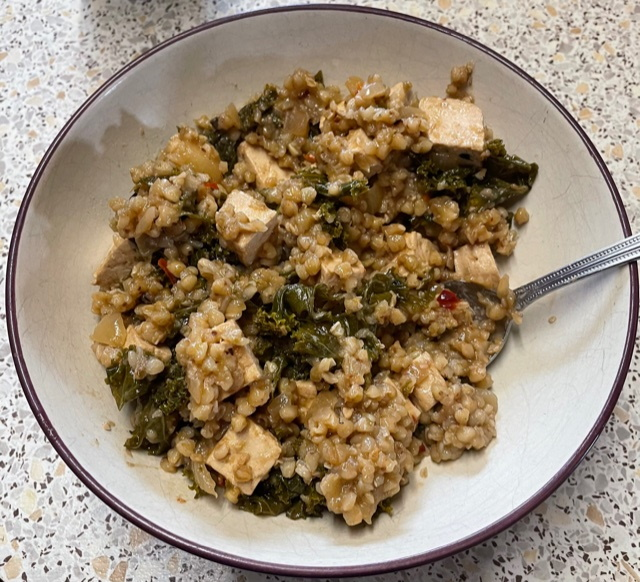

Buckwheat, tofu & kale stew
Liquid
- Mix
- 350 ml vegetable stock
- 120 ml white wine
Stew
- Heat for 5 mins until everything dry
- ¼ cup vegetable oil
- 1 chopped onion
- 1 cubed potato
- 8 cloves garlic
- ½ cup buckwheat
- Add 4 cups chopped kale with stems removed and heat for 5 mins
- Add 250g cubed tofu and heat for 5 mins until browned
- Add half the liquid
- Simmer for 20 mins, adding more liquid as necessary until buckwheat tender
- Add and heat for 5 mins until mixture is saucy
- 2 tbsp soy sauce
- 1 tsp harissa
Pics
